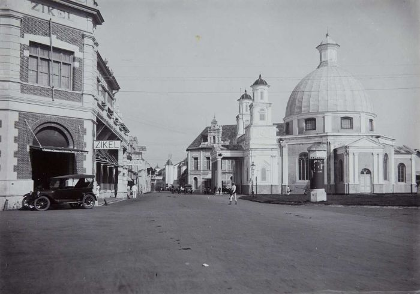
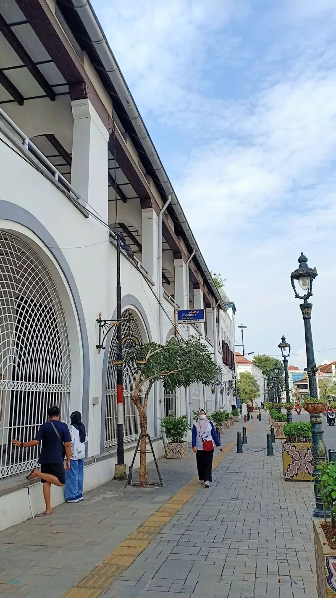
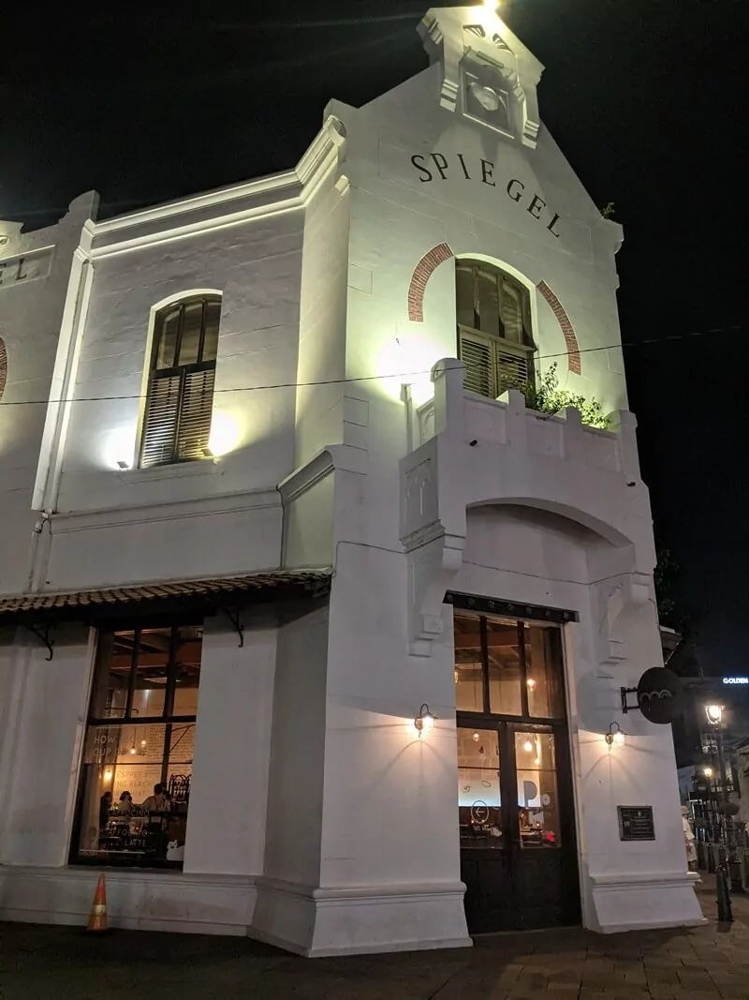

Kota Lama
Kota Lama Semarang menjadi sebuah saksi sejarah akan peradaban yang terjadi beberapa waktu silam. Bahkan kawasan Kota Lama Semarang menjadi salah satu pusat perdagangan di Indonesia. Sama halnya dengan
Kota Tua di Jakarta, Kota Lama Semarang pun memiliki beberapa bangunan kokoh khas Eropa dan hingga saat ini masih digunakan. Kawasan Kota Lama Semarang sering dimanfaatkan para pecinta fotografi
untuk mengambil beberapa gambar dengan gaya vintage. Apalagi jika di hari libur atau akhir pekan, kawasan Kota Lama Semarang sering dimanfaatkan masyarakat untuk berolahraga ataupun bersantai.
Saat ini Kota Lama Semarang sudah dibuka kembali, kamu dapat mengunjunginya dengan tetap menerapkan aturan prokes yang selama ini berjalan.

Sejarah
Kota Lama sekarang berbeda dengan Kota Lama pada zaman dulu, meski masih menyimpan bangunan-bangunan bersejarah yang tak mungkin dihilangkan. Sejarahnya berawal dari kesepakatan antara Kerajaan Mataram
dengan pihak VOC, dimana Kerajaan Mataram harus menyerahkan Semarang sebagai pembayaran akan batuan VOC dalam menghadapi pemberontakan Trunojoyo. Kesepakatan itu terjadi pada tanggal 15 Januari
tahun 1678 silam. Sejak itu mulailah dibangun beberapa bangunan mulai dari gedung pemerintahan, rumah-rumah warga, kanal serta benteng yang bernama Vijhoek. Pada abad ke 19 hingga 20, Kota
Lama Semarang menjadi pusat perdagangan. Kota Lama Semarang dulunya sering disebut Outstadt. Di sekitar kawasan Kota Lama terdapat jalan-jalan yang saat itu berfungsi untuk mempercepat jalur
perhubungan antar ketiga pintu gerbang. Jalan utamanya bernama Heeren Straat yang saat ini bernama Jl. Letjen. Suprapto. Karena masih menyimpan bangunan-banguan khas Eropa, kawasan Kota Lama
Semarang mendapatkan julukan sebagai “Little Netherland”. Sedikitnya terdapat 50 bangunan kuno yang berada di sekitar Kota Lama Semarang, dan memiliki luas sekitar 31 hektar. Saat ini beberapa
bangunan yang ada masih dapat difungsikan yaitu Gedung Keuangan PAPAK yang dulunya merupakan Gedung Balai Kota, Bank Mandiri KC Mpu Tantular dulunya merupakan gedung Societiet De Harmonie,
Gereja Blenduk yang dibangun pada abad ke 18, dan masih berfungsi hingga saat ini, Jembatan Mberok yang dibangun pada abad ke 17, yang masih kokoh hingga saat ini. Dan masih banyak lagi yang
lainnya.

Lokasi Kota Lama Semarang
Lokasi dan alamat Kota Lama Semarang berada di Jl. Letjen Suprapto, Tanjung Mas, Kecamatan Semarang Utara, Kota Semarang, Jawa Tengah.

Rute Menuju Kota Lama Semarang
Cara menuju Kota Lama Semarang jika kamu berangkat dari arah Ungaran dengan menuju Banyumanik Peterongan kemudian menuju Jl. MT. Haryono hingga tiba di bundaran Bubakan, lalu pilihlah arah menuju Cendrawasih.
Kemudian kamu tinggal mengikuti petunjuk arah hingga tiba akhirnya di kawasan Kota Lama Semarang. Rute menuju Kota Lama Semarang dapat ditempuh dari berbagai arah. Kalau mau cepat dan ngga
ribet, kamu dapat mengandalkan aplikasi GPS.

Jam Buka Kota Lama Semarang
Jam operasional Kota Lama Semarang dibuka selama 7 hari seminggu, dan 24 jam sehari. Namun karena saat ini kondisi Indonesia belum sepenuhnya pulih dari pandemi Covid-19, maka waktu kunjungan pun dibatasi
yakni hanya sampai pukul 21.00 waktu setempat. Sedangkan untuk beberapa tempat wisata yang ada di sekitarnya, saat ini masih tutup sementara hingga batas waktu yang belum ditentukan.

Tiket Masuk Kota Lama Semarang
Karena merupakan area publik, maka harga tiket masuk Kota Lama Semarang pun tidak ada alias gratis. Kamu hanya perlu mengeluarkan uang untuk biaya parkir kendaraan serta jika hendak mengunjungi beberapa
tempat wisata yang ada di sekitar kawasan Kota Lama Semarang.
